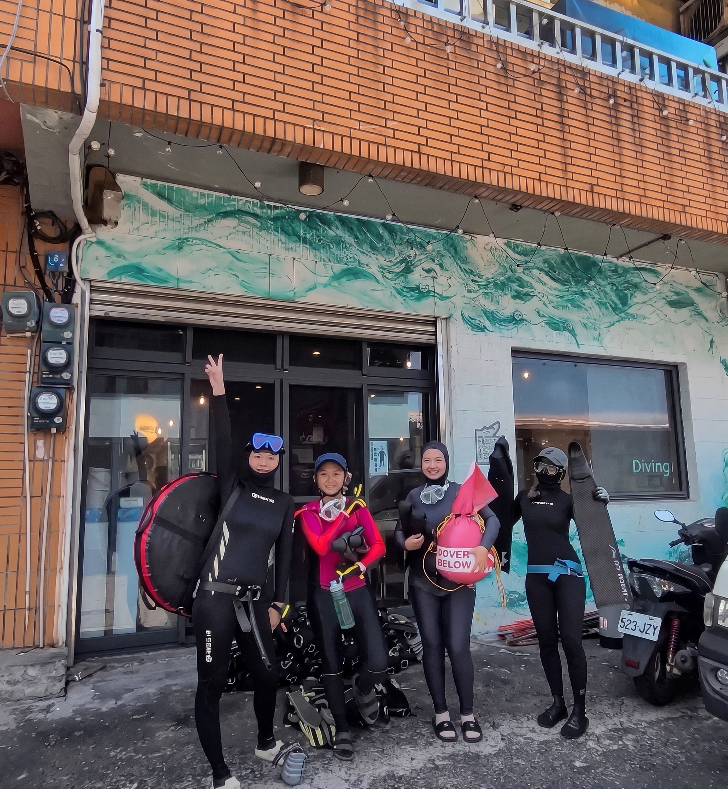
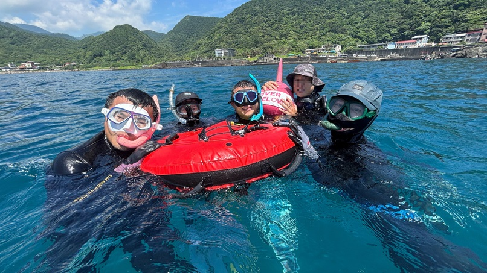
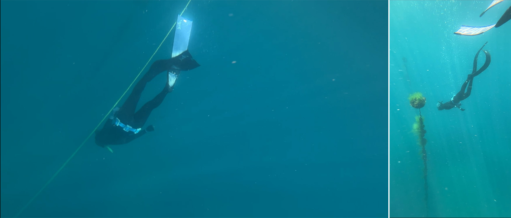
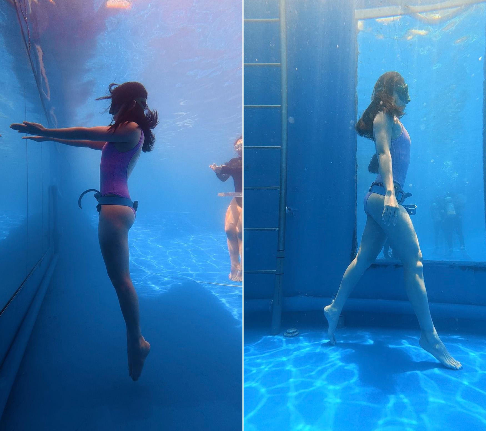
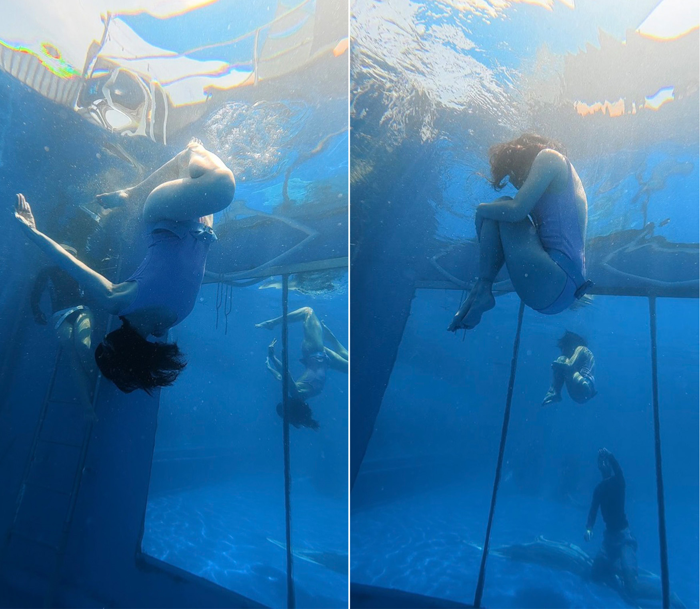
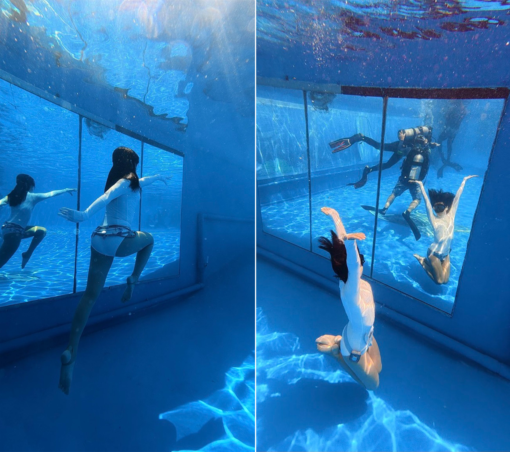

2024 年經朋友介紹，開始學習自由潛水，這是一項靠憋一口氣，在水裡突破自我極限的運動。當初設定的目標，就是一定要拿到 SSI 系統的 L1 證照（過課內容含靜態閉氣 1 分 30 秒、下潛 10 米等項目），經過不斷前往東北角龍洞練習，還”順便”獲得潛店頒發的「東北角潛水達人」獎狀。別誤會！這只是代表 2024 年我在該潛店是自潛次數最多的學員，跟”達人”這個詞八竿子打不著！
終於，在 2025 年讓我取得證照了！
以下分享潛水時的一些紀錄。
為了保護海洋生態，每次潛水我採取的都是物理防曬（就算是號稱海洋友善的防曬乳，也不能保證所有成份都不會傷害到海洋生物）。下圖右就是我，包到親媽看到也認不出。
防曬裝備有潛水帽（防止額頭曬傷）、臉基尼（防止曬出面鏡臉）、3M 工作手套（防止曬出黑手套）、長袖長褲防寒衣、襪子（防止在長褲沒包到的地方曬出腳踝一圈黑線），缺一不可。
 |
教練加上四個學員。我們扒著的是浮球，我習慣準備下潛之前的調息（讓身體放鬆、降低心跳的呼吸過程） 跟出水後的恢復呼吸，都要抓著它。
 |
躬身下潛（倒立入水，如左圖），考證照的其中一個環節。 龍洞的能見度俗稱為「味增湯」。
經教練同意，可以在浮球附近自由活動。右圖中是另一顆沉水浮球，上面會有一些生物可以觀察。
 |
2026 年想要在乏味的自潛訓練中多點樂趣，所以我考取了 SSI 系統的 UnderWater Dance 證照。
中性浮力與負浮力
第一堂訓練課程，為了達到左圖的 " 中性浮力 "（不上浮也不下沉）的狀態，大概耗費掉一個小時以上。
右圖則是是”負浮力”的狀態，需要靠增加配重（鉛塊或是有重量的鍊子），讓身體能夠沉底，圖中是在準備做水中走路的訓練。
 |
轉圈訓練
一開始糊裡糊塗的，根本不知道自己身體處在什麼狀態，圈就轉完了。後面才漸漸抓到轉圈的方向、速度跟腳部線條控制。左圖中在梯子上的是戒護我安全的教練。
右圖為轉圈完抱膝的動作，另一位教練負責記錄課程內容，課後跟我討論可以改進的地方。
 |
自編舞蹈
水舞證照考取的最後一個環節是「自編舞蹈」。參考了許多水舞的影片，搞出了一段差強人意的舞碼。
第一次水舞課程，不確定泳池的水是否有經過處理才排入大海，我索性不塗防曬，結果曬傷，導致有一陣子穿衣服還需要挑材質，避免刮到皮膚刺痛。以前年輕時就算曬到出水泡也完全不痛，現在破 40 不能不服老了。
因此第一次課程結束後，馬上採購了長袖水母衣與手套，還從教練得知，原來有防曬褲襪！圖中可能可以依稀看出褲襪的存在（我買踩腳款式，應可見有膚色的帶子穿過腳跟）。
 |
經過自由潛水的訓練，在此呼籲看到這篇文章的人，千萬不要獨自在水裡憋氣，在水中昏迷只是一瞬間的事情，尤其在泳池，憋氣還沉底的人，簡直是找死的行為，也不要獨自一人潛水。
曾經和家人去海泳池，目測水深只有兩、三公尺，池邊也有救生員，但我還是選擇只在水面浮潛。因為全家只有我會潛水，萬一我在水下發生狀況，家人無法下潛協助我回到水面。
最後，也非常推薦想要減肥的人學習自潛或水舞，對收平肚子有奇效！